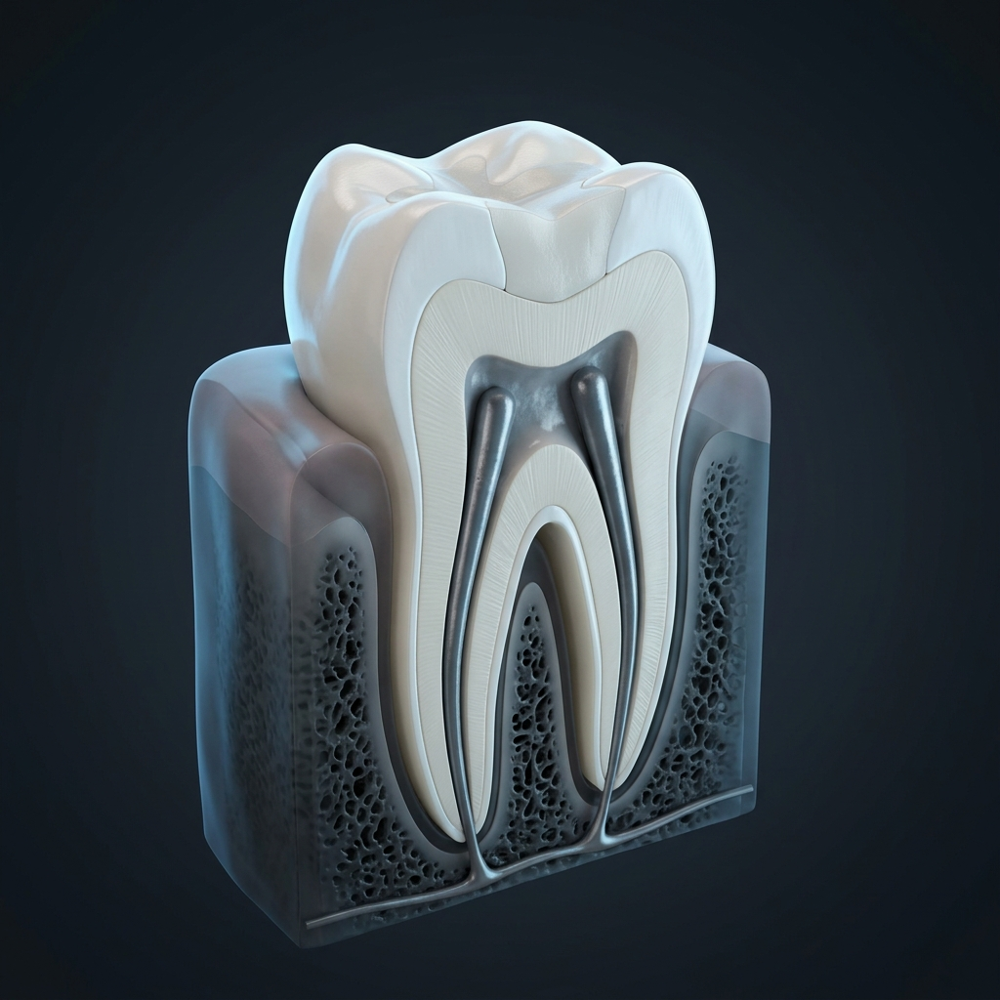

Basta mencionar a palavra "canal" para que muitos pacientes sintam calafrios. Durante décadas, o tratamento de canal (ou tratamento endodôntico) ganhou a má fama de ser doloroso e demorado. No entanto, a odontologia avançou imensamente. Hoje, o tratamento de canal é a salvação do seu dente e, graças às novas tecnologias, é praticamente indolor.
O que é o Tratamento de Canal?
Dentro do nosso dente existe um tecido vivo chamado polpa (onde ficam os nervos e vasos sanguÃneos). Quando uma cárie muito profunda atinge essa área, ou quando o dente sofre um trauma (uma pancada forte), a polpa pode inflamar de forma irreversÃvel ou até morrer (necrosar), causando muita dor e infecção.
O tratamento de canal consiste em limpar essa área interna, removendo o tecido doente, desinfetando os canais da raiz e selando o espaço com um material especial para evitar que bactérias voltem a entrar.
Mito ou Verdade: O Canal Dói?
MITO! O que dói é a infecção que estava lá ANTES do tratamento. O procedimento de canal, na verdade, é o que acaba com a dor.
Com o uso de anestésicos modernos e profundos, o paciente não sente dor durante o procedimento. É como fazer uma restauração (obturação) comum. É possÃvel sentir um leve desconforto nos dias seguintes, o que é controlado facilmente com analgésicos receitados pelo dentista.
Por que não arrancar o dente de uma vez?
Muitos pensam: "Já que o dente está doendo tanto, é melhor arrancar". Cuidado! A extração de um dente deve ser sempre o último recurso.
- O dente natural é insubstituÃvel: Nenhum implante é tão bom quanto o seu próprio dente.
- Evita problemas futuros: A falta de um dente faz com que os dentes vizinhos se movam, prejudicando a mordida, a mastigação e até a estética do rosto a longo prazo.
- Custo menor: Salvar o dente com um tratamento de canal e uma coroa é geralmente mais barato do que extrair e colocar um implante.
Tecnologia na Endodontia
Na Alphaville Odontologia, nossa especialista Dra. Clery Vazzoler utiliza instrumentos rotatórios motorizados e localizadores apicais eletrônicos. Isso significa que, na maioria dos casos, o tratamento que antigamente levava várias sessões chatas, hoje pode ser concluÃdo em apenas uma única sessão com total segurança e conforto.
Seu dente está doendo?
Conheça nossa tecnologia em endodontia e saiba como podemos salvar o seu dente sem dor.
Saber Mais Sobre Tratamento de Canal